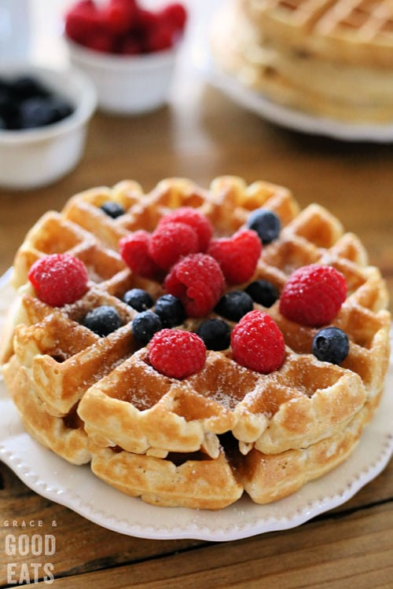

Waffle Recipe

Easy, simple Belgian waffles recipe.
Cooking Ingredients Needed
- 2 Eggs
- Flour
- Milk
- Oil
- Sugar
- Baking Powder
- Salt
- Vanilla
- Cooking Spray
Cooking Instructions
- Make the batter: Whisk the eggs, then add the flour, milk, and oil. Whisk in the sugar.
Stir in the remaining ingredients.
- Make the waffles: Pour the batter onto the hot, prepared waffle iron.
Cook until golden brown and repeat with the remaining batter.